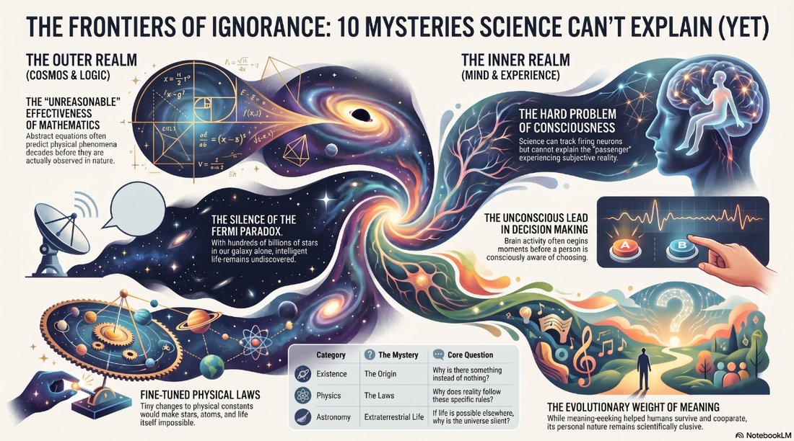

God vs Science. I can’t think of a question that has been debated for as long or as intently as this one. On one end of the scale — Science proves there is no God. On the other end — only God could create a universe with Laws that Science could discover. Then there is everything in between. That is why I created this podcast.
What is unique about this podcast is that you can join it right now: open the link, click Interactive Mode, and then Join. You will be able to make any comment or ask any question out loud, and the hosts will reply audibly, instantly. Impressive, huh? Go ahead and give it a try — then come back and leave your reaction in the Comments block at the bottom of this post. I will circle back later and summarize the consensus on this persistent question. We can finally solve this once and for all!

Comments